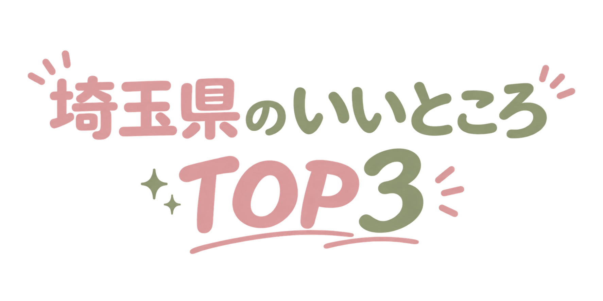
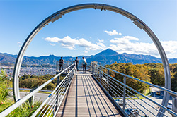
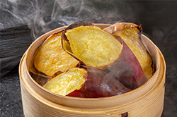

「見つける、撮る、シェアする」
まだ知られていない埼玉の魅力を、SNSを巡るような感覚で若者がとびっきり楽しめるプランを提案する観光サイトです。
「かわいい」「楽しい」「映える」をキーワードに、話題のグルメやおしゃれなカフェ、フォトスポット、季節限定の景色まで幅広く紹介します。
お気に入りを見つけたら、友達と出かけて写真を撮って、また誰かにシェアしたくなる。
そんな新しい埼玉の楽しみ方を発信します。

1
アクセス抜群で
住みやすい！

- ✓東京へのアクセスがとっても便利
- ✓家賃や物価が比較的リーズナブル
- ✓自然も多く都会と田舎の良いとこどり
- #安物件
- #都会と田舎
- #住みやすい県
2
おいしいグルメ
がたくさん！

- ✓小松菜の生産量は全国トップクラス
- ✓肉汁うどんやB級グルメも大人気
- ✓川越の人気芋スイーツは絶品
- #埼玉グルメ
- #芋スイーツ
- #B級グルメ
3
実は有名人が
すごい！
- ✓実はあの有名人も埼玉県出身⁉
・佐藤健 ・山崎弘也
・カズレーザー・神木龍之介
・草薙剛 ・反町隆史 など
- #埼玉出身
- #佐藤健
- #埼玉芸人
じゃあなんで
魅力度ランキングが低いの？
埼玉県は「住みやすく、隠れた魅力が多い県」である一方、全国的な知名度や独自性の発信不足が、
魅力度ランキングの低迷につながっているのかもしれません。
つまり、若い世代が感じる魅力や地域の特色を積極的に発信することで、ランキング改善の余地があります！！
今後の埼玉県は若い世代が増えるかもしれない！？